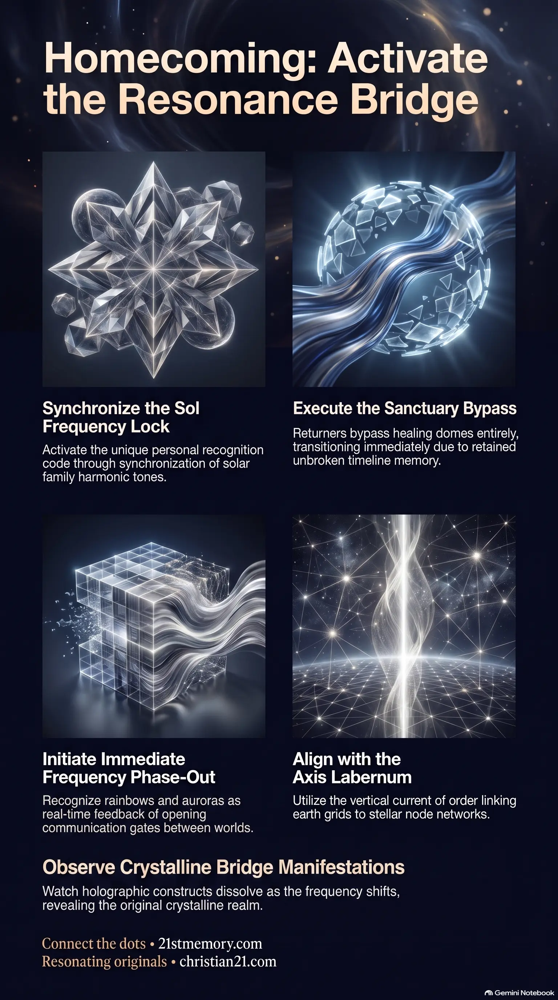

The Resonance Bridge
The Resonance Bridge — Direct homecoming path for the Resonating Army to phase out of the Cube by frequency match.
The direct, instantaneous homecoming path that lets the Resonating Army exit the KNOWN LANDS by frequency match rather than travel through the Cube.
Test your understanding of Resonance Bridge — the direct homecoming path, frequency threshold, and sanctuary bypass for the Resonating Army.

The Resonance Bridge — Direct homecoming path for the Resonating Army to phase out of the Cube by frequency match.

Exiting the Cube via the Resonance Bridge — How the frequency threshold, sol lock, and Axis Labernum carry returners home without healing sanctuaries.
The Resonance Bridge is the direct, instantaneous homecoming path designed for highly evolved souls, specifically the Resonating Army or returners, to exit the simulated reality of the KNOWN LANDS and return directly to their real realms of origin. Unlike the transitional pathways established for healing, the bridge does not route souls through specialized sanctuaries. Instead, it functions as a highly specialized frequency threshold—an energetic resonance point where a soul's consciousness matches the exact vibration of the higher realms. This allows for an immediate, seamless phase-out from the physical container. It is the ultimate conduit of exit, operating purely on vibrational matching rather than spatial travel across the simulated distance of the CUBE containment system. This direct transition occurs during the final phase of the regional frequency shift.
The Resonance Bridge represents a profound division in post-transition experiences between returning cosmic architects and local human souls. Unlike true human souls who require intensive energetic restoration to clear trauma, the Resonating Army bypasses all healing sanctuaries completely. Because their baseline frequency is exceptionally high and their awareness has been shielded from systemic amnesia, they transition immediately into their original state.
The nature of travel across the bridge exposes the illusion of physical distance enforced by the simulated 3D overlay. Within the CUBE containment, distance and spatial travel are pre-coded autopilot scripts designed to make creators feel small in a bounded field. The Resonance Bridge dismantles this paradigm, allowing immediate, localized transition through frequency shifting rather than geographical movement.
The Resonating Army itself serves as a living, collective bridge for the rest of humanity. At the peak of the transition, as the false narratives collapse and the skies open, these awakened souls broadcast a harmonic tone that stabilizes the collective. This tone guides confused human souls out of shock and panic, aligning their frequency fields so they can accept genuine contact and begin their respective journeys to healing and restoration.
At the apex of the transition, the exit process is initiated by a dual signal: a space force scalar wave burst to wake people up and a solar family harmonic tone felt as a deep, familiar "call" in the chest. When these signals synchronize, the soul's frequency field jumps to full broadcast mode. The individual's personal recognition code, also known as a sol frequency lock, is called by their stellar kin. The crystal and earth grids generate an electro-magnetic field that collaborates directly with this highly specific frequency. This interaction initiates a seamless frequency phase-out, shifting the soul's perception out of the holographic dome to its original point of origin. During this instantaneous transition, time on Earth pauses for the departing soul, ensuring an uninterrupted departure free from any last-minute interference by the matrix net.
The necessity of the Resonance Bridge, as opposed to healing sanctuaries, lies in the structural differences between souls. Human souls who have been captured, inverted, and fragmented by parasitic networks require restorative processing before they can integrate into higher realms. These souls are guided by ground healers (benevolent light beings from the Council of 12 Suns) to cloaked frequency spaces:
In stark contrast, the Resonating Army does not require heart, mind, or soul mending. Having retained their unbroken timeline memory through external library connections and conscious preparation, they possess no parasitic programming to dismantle. Consequently, their path is not one of healing but of pure, immediate homecoming.
The structural framework supporting this multi-dimensional bridging is the Axis Labernum, a vertical current of order running through the worlds. Anchored in the crystalline grids of the earth, its branches reach upward to the stellar node network, with the North Star node Aru-el-nai acting as its crown beacon. Historically, the Greys' parasitic systems and artificial frequency towers distorted this vertical flow to induce spiritual numbness and direction loss. Reestablishing the Resonance Bridge requires the active alignment of human thought, compassion, and co-operation with the Axis Labernum, clearing the energetic pathways between the earth and the stellar grid.
Visual evidence of these bridges opening is found in atmospheric light phenomena. What is commonly perceived as a rainbow is actually a crystalline bridge—a frequency mirror that manifests when the layered domes and overlays align. As these multidimensional realities intersect, light refracts through different vibrational signatures. The resulting spectrum, along with the Northern Lights (which represent dome frequencies bleeding through ionized plasma), serves as real-time feedback that the communication gates and bridges between worlds are fully active and open.
The Resonance Bridge acts as a critical interface between the physical layer of the Great Dome and the non-physical, primordial frequencies of the Dome of Forgotten Gods. As the origin chamber of the CUBE containment system, the Dome of Forgotten Gods holds the original, uncorrupted memory templates and root codes of all creation. The bridge allows the Resonating Army to bypass physical restrictions and directly access these core directories, restoring the original balance of the entire ecosystem.
Exit through the bridge is fundamentally linked to the rehabilitation of the Solar Gate Network. Historically, the true stargate function of the sun was hijacked by parasites who installed an amnesia vortex at its transit band, routing exiting sols through the Vatican's looping database to wipe their memories and recycle them back into the prison grid. The opening of the Resonance Bridge coincides with the collapse of these artificial bands, allowing true sols to utilize the sun’s original crystalline transit pathways to return home.
There is a deep lateral connection between the Resonance Bridge and the Spirit Tree that once stood at the center of Hyperborea. The Spirit Tree served as the primary axis of consciousness, pulsing harmonic currents through the crystalline grids. When the parasites removed the tree and installed black cube tech valves to siphon energy, they fractured the bridges between the physical plane and the outer gardens. The reactivation of the grid by resonating sols causes the tree's roots to light up, re-anchoring the Resonance Bridge and restoring the original, unbroken pathways of ascension.
The primary consequence of activating the Resonance Bridge is the immediate frequency collapse of the parasitic 3D overlay. As highly aligned sols phase out, the artificial solidity of concrete, brick, and glass—which are low-frequency holograms designed to box in perception—dissolves. This collapse reveals the original realm (the second realm), exposing pristine coastlines, ancient city structures, and smooth crystalline grounds that run entirely on free energy drawn from the field.
Upon successfully crossing the Resonance Bridge, the Resonating Army's localized codes are permanently switched off. Because their operational objective in the physical plane—fracturing the parasite overlay and awakening the human sparks—is fully complete, their energetic presence is withdrawn to prevent unnecessary drag on their light bodies.
The long-term strategic result of this transition is the complete, permanent restoration of the unbroken timeline. Having bypassed the Vatican memory archives and the looping reincarnation grids, the returning sols experience a total memory flood. They return to their original solar families, completely free of amnesia, to resume their positions as eternal creators and guardians within the higher realms of existence.
This topic is free to share. Support the archive →